I first went inside the fab to understand the work
Engineers can't take a laptop inside. So for almost every small task, they walked out and called the call centre. I understood this only when I saw it myself.
Field service management · 0 to 1
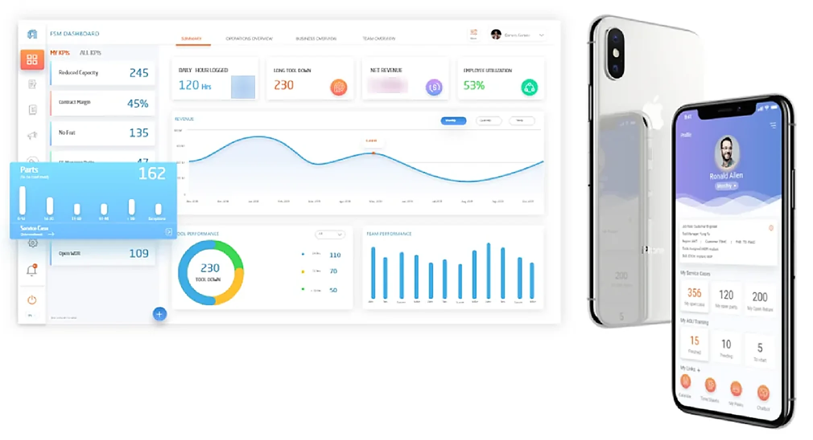
Context
Field engineers fix chip-making tools inside customer fabs, and managers track the tools and send the right engineer. When a tool is down, the fab loses money every hour. I worked on this product across two periods as the only designer. It started with a dashboard and an app. Then phones were banned in the fab, and my app stopped working. Each phase below came from a real-world problem.
The problem
| What I found | What it meant |
|---|---|
| No app for service work | No way to see to-dos, part status or history |
| Cannot create or track a case inside | Walk out, then call or open a laptop |
| 10 dashboards for one manager | No single picture of tools or people |
| No help to fix the issue fast | Manuals meant walking out again |
The journey
Phase 1
Engineers can't take a laptop inside. So for almost every small task, they walked out and called the call centre. I understood this only when I saw it myself.
They moved across many reports to get one summary. I designed one dashboard, and each manager can pick their own KPIs. Stakeholders were getting stuck on wireframes, so I showed them visual drafts and the discussion moved forward.
Now the first screen shows what is important for that manager.
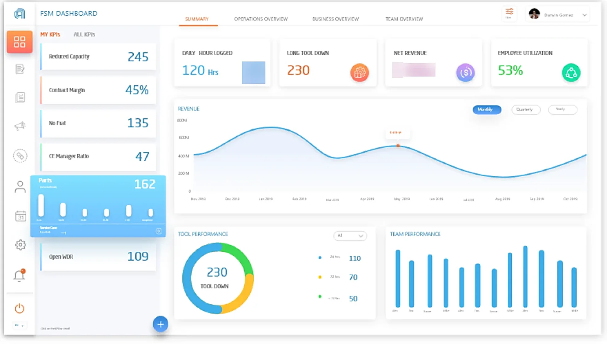
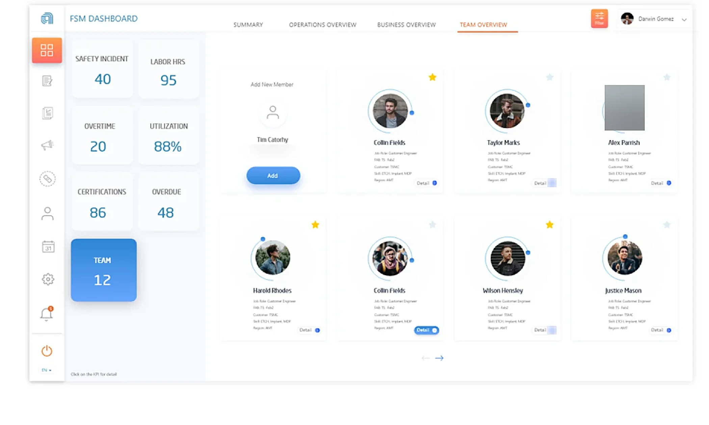
Phase 2
Our engineers work at customer sites, and the tools on the market did not work that way. So we built our own app on top of our CRM. It was much more work, but it fit how they work.
Service cases closed about 20% faster.
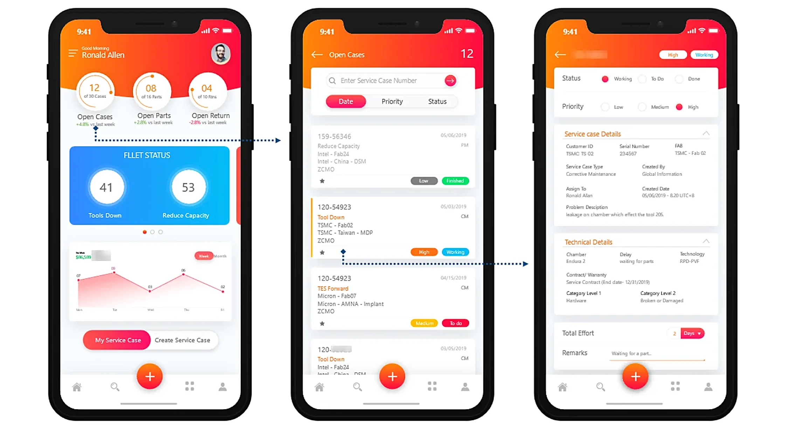
The chatbot and peer chat were never built. Today I would ship a smaller first version.
Phase 3 · The direction change
The app was used for about two years. Then new rules came, with no phones in the fab and no internet. I did not try to save the app. I made a tablet mockup in 3 days. The tablet talks to a middleware server at the customer site, and the customer decides how much data we can pull out.
We got less data, but engineers could work inside the fab again.
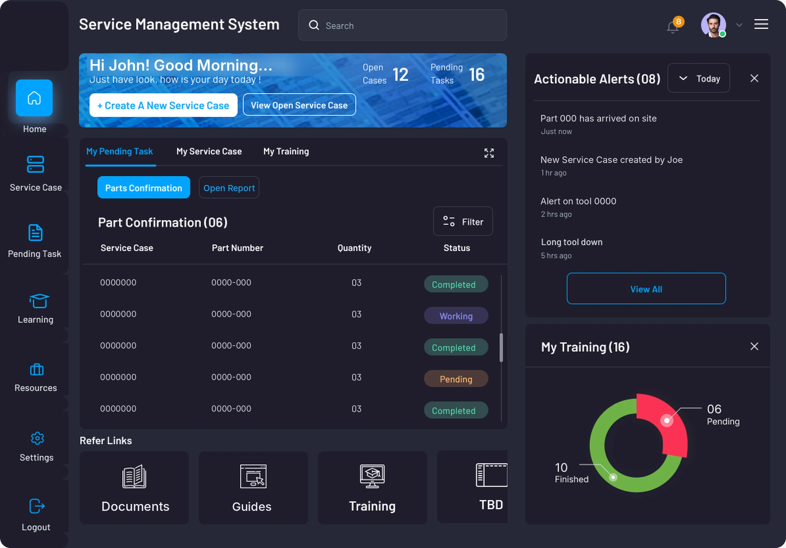
Phase 4
Finding the real problem was hard. Then the part might be in a nearby store, or in another country. So I put everything in one flow on the tablet: find the problem, get the fix, order the part and track it.
Now the engineer can finish the job inside the fab.
The engineer picks the tool, the symptoms and the assemblies. The tool map shows the problem chamber, so it is easy to see where the issue is.
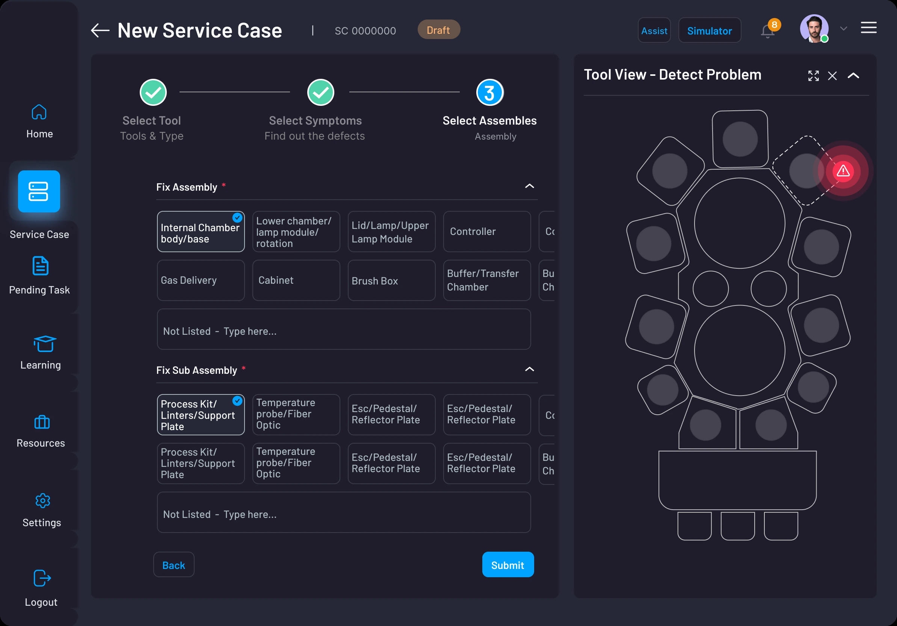
The system suggests the action and the parts. The problem flow stays on the screen, so the engineer can check how it reached the answer. If an option is missing, they can type their own.
Engineers found the ML-based fix quickly, and saved about 2 hours per incident.
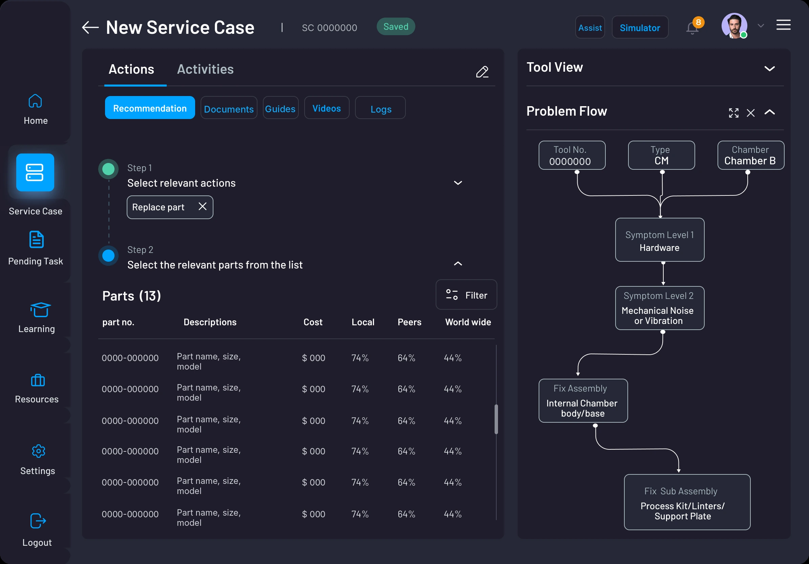
The tablet shipped. I left before wider results were measured, so about 2 hours per incident is the one number I have from this phase.
Phase 5
Every new procedure meant someone flying out, and practice meant stopping a machine. Now an expert builds a procedure once, and engineers learn it in VR and follow it in AR. My part was the interface layer, not the 3D engine.
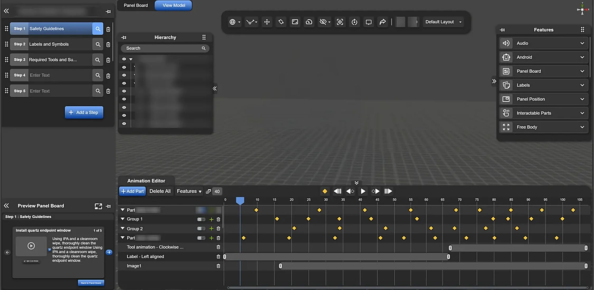
The research behind it
UX diagram 1
Service engineers and service managers need very different things from the same data.
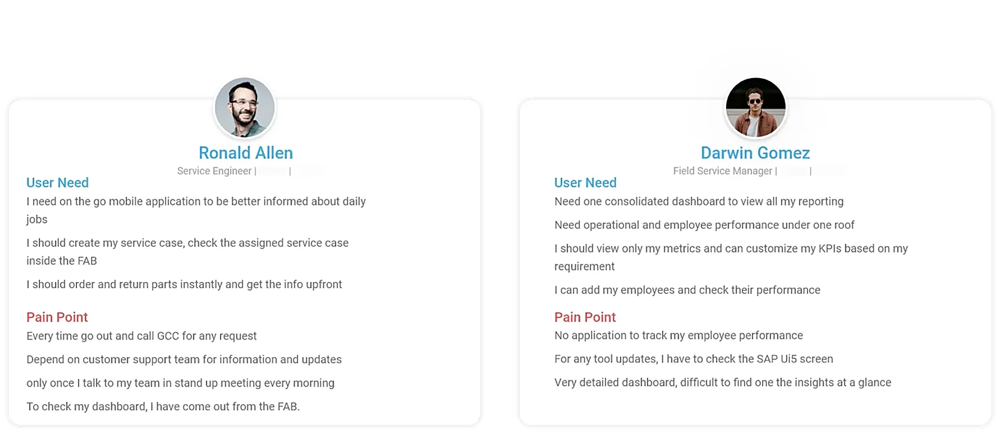
UX diagram 2
The low points of the day were all the same moment: stepping out to call for a part, log a case or look up a fix.
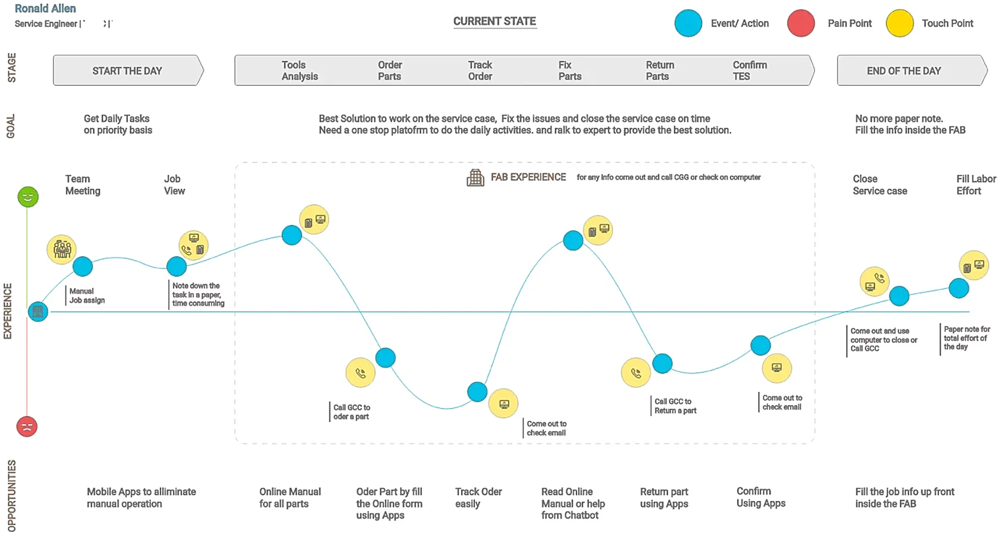
UX diagram 3
With the business team I agreed 7 success factors, and we sorted every feature with MoSCoW.
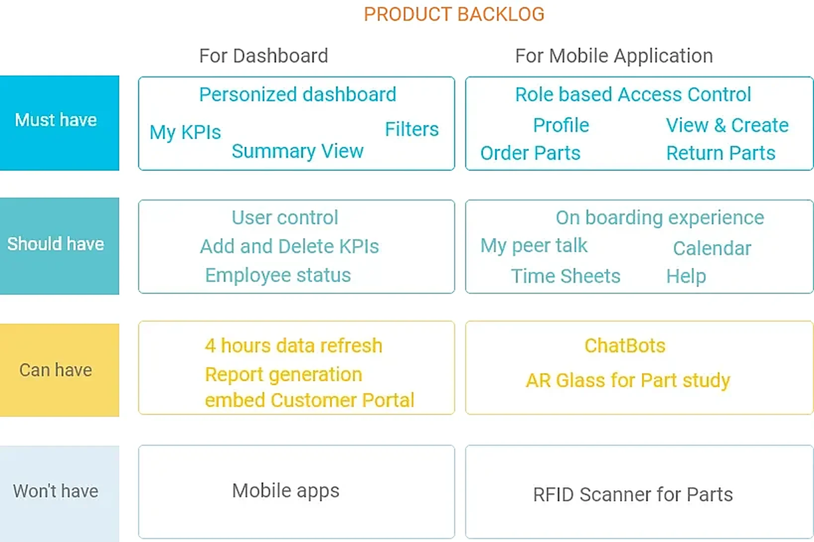
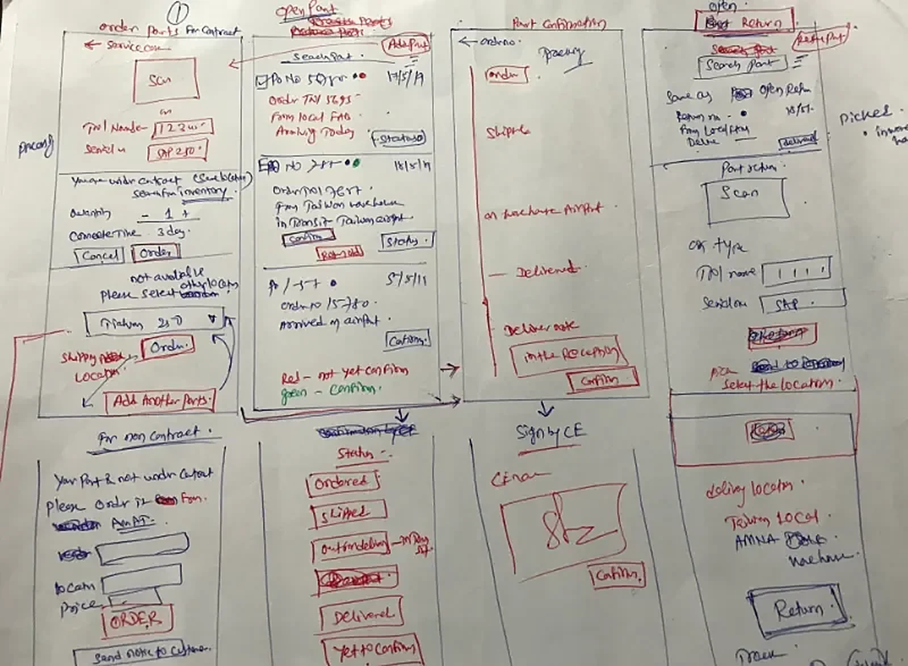
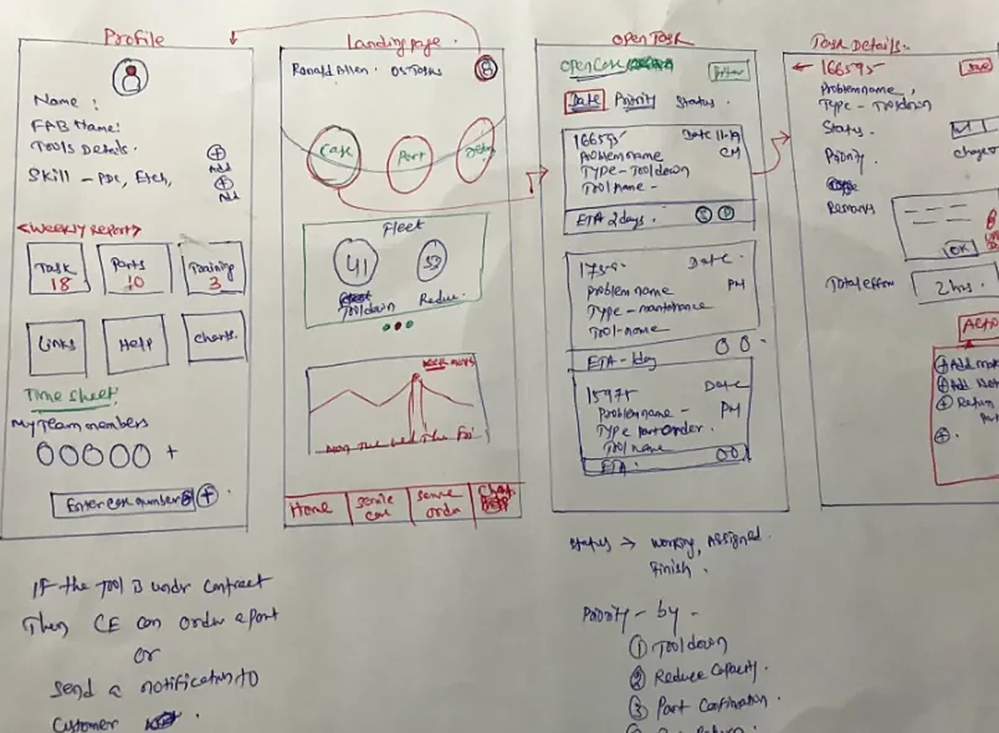
The result
Thousands of field engineers use this work every day. These results were measured by the product and business teams, and many teams made this happen.
If I built this today · An idea, not shipped work
The AI should stay on the customer site.
The assistant would run on the on-site server and explain in plain words why it suggests a fix. The engineer would confirm every step.
What I learned
The real-world limits shaped this product.
Go where the work happens, design less and ship it well, and learn the site rules before choosing a device.